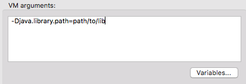

Example: Testing SAP
Overview
This document contains a basic example for testing SAP-based applications.
The SAP connector requires a set of specific libraries which are listed in the SAP Connector requirements documentation. These libraries need to be added manually in order to test the SAP-based application correctly.
Find below the configuration needed to test a SAP connector using studio or using Maven respectively:
Configuration
From Studio
In your Studio environment:
-
Add the SAP libraries to the classpath:
-
Navigate to Build Path > Configure Build Path
-
In the Libraries tab, click the Add Library … button
-
Select Anypoint Connectors Dependencies
-
Select the SAP Connector option.
This process is also described in the SAP Connector documentation.
-
-
You may also need to make the
java.library.pathpoint to the folder where the native libraries are located.
The MUnit Studio plugin will try to find these native libraries and configure them automatically when you try to run your tests. In case they are not found, you need to add the following vm argument in the run configuration:-
In Studio’s top navigation bar, click run
-
Click Run Configurations…
-
Select the Arguments tab
-
In the VM Arguments dialog box, type the path to your libraries with the
java.library.pathargument.
Example:-Djava.library.path=path/to/lib
-
From Maven
One way of adding the libraries to the classpath is using the additionalClasspathElements parameter in the maven plugin.
You can provide the path to each of the SAP libraries that you want to add:
<additionalClasspathElements>
<additionalClasspathElement>/path/to/lib/sapjco3.jar</additionalClasspathElement>
<additionalClasspathElement>/path/to/lib/sapidoc3.jar</additionalClasspathElement>
</additionalClasspathElements>|
If there is already a sap dependency in the pom, but the library name doesn’t match SAP naming restrictions, you may need to exclude them from the test run. |
Additionally, you need to make the java.library.path property point to the native libraries directory, similar to how it’s done in Studio.
To accomplish this, you can use the argLine parameter to add the additional vm argument.
<argLines>
<argLine>-Djava.library.path=/path/to/native/lib/folder</argLine>
</argLines>| The mentioned Maven Plugin configuration parameters are available since MUnit 1.3.2 |